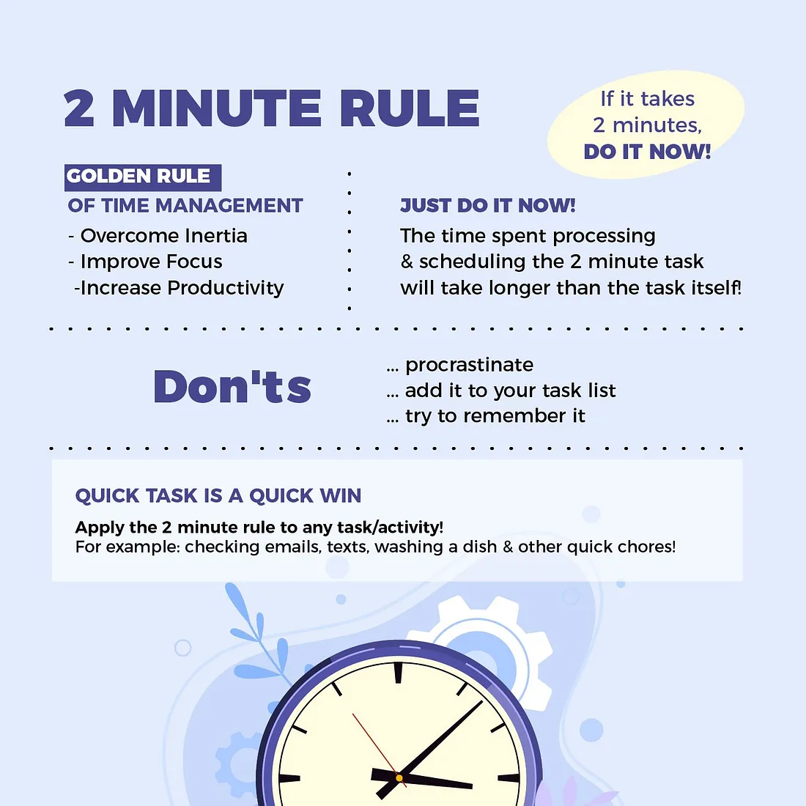

04
The 2-Minute Rule for Digital Tasks
Are you sick of procrastination? The 2-Minute Rule is a tried-and-true means to get you moving and keep you productive. Let's see how this rule can be incorporated most effectively into your digital workflow.
What is the 2-Minute Rule?
It is the shortcut method for dealing with small tasks right there and then.
David Allen, in Getting Things Done, conceived the 2-Minute Rule.” It says:
- If something will take less than 2 minutes to complete, do it now.
- If the task takes longer, break it down or schedule it for later.
Why It Works
The psychology behind the 2-Minute Rule.
- Overcomes Procrastination: Oftentimes, getting started is the biggest hurdle. The 2-minute rule pushes you gently in that direction.
- Builds Momentum: Finishing small tasks generates a sense of achievement that propels you toward much bigger tasks.
- Less Mental Clutter: Doing small things immediately clears up mental space for the important stuff.
- Encourages Action: Concentrating on performing small actions creates the habit of doing.
How To Work The Rule
Practical ways for you to incorporate the 2-Minute Rule into your daily routine.
- Emails: Do emails-short ones of less than 2 minutes to do- and don't let them pile up.
- Quick Tasks: Quick chores like filing, cleaning up your desktop, and checking off your to-dos.
- Break Down Tedious Tasks: Break down boring jobs. Setting a timer for 2 minutes will launch any project: open a file, write the first sentence.
- Daily Habits: Any little habit, whether it's drinking one glass of water or stretching.
📸 Visualize the 2-Minute Rule in Action

Examples from real life on the implementation of the 2-Minute Rule.
Success Stories
Real-life examples of the 2-Minute Rule in action.
- Professionals: Keeping their inbox clear and managing small tasks following this rule.
- Students: Taking baby steps to do away with procrastination using the 2-Minute Rule to accomplish assignments.
- Remote Workers: Gaining quick wins during the day for productivity and focus.
- Entrepreneurs: Making quick decisions almost at rocket speed with the help of the 2-Minute Rule to keep the momentum rolling.